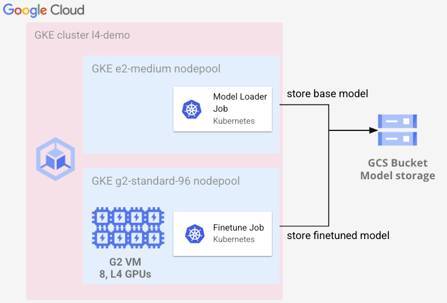

Tutorial: Finetuning Llama 7b on GKE using L4 GPUs
We’ll walk through fine-tuning a Llama 2 7B model using GKE using 8 x L4 GPUs. L4 GPUs are suitable for many use cases beyond serving models. We will demonstrate how the L4 GPU is a great option for fine tuning LLMs, at a fraction of the cost of using a higher end GPU.
Let’s get started and fine-tune Llama 2 7B on the dell-research-harvard/AmericanStories dataset using GKE. Parameter Efficient Fine Tuning (PEFT) and LoRA is used so fine-tuning is posible on GPUs with less GPU memory.
As part of this tutorial, you will get to do the following:
- Create a GKE cluster with an autoscaling L4 GPU nodepool
- Run a Kubernetes Job to download Llama 2 7B and fine-tune using L4 GPUs

Prerequisites
- A terminal with
kubectlandgcloudinstalled. Cloud Shell works great! - L4 GPUs quota to be able to run additional 8 L4 GPUs
- Request access to Meta Llama models by submitting the request access form
- Agree to the Llama 2 terms on the Llama 2 7B HF model in HuggingFace
Creating the GKE cluster with L4 nodepools
Let’s start by setting a few environment variables that will be used throughout this post. You should modify these variables to meet your environment and needs.
Download the code and files used throughout the tutorial:
git clone https://github.com/GoogleCloudPlatform/ai-on-gke
cd ai-on-gke/tutorials-and-examples/genAI-LLM/finetuning-llama-7b-on-l4
Run the following commands to set the env variables and make sure to replace <my-project-id>:
gcloud config set project <my-project-id>
export PROJECT_ID=$(gcloud config get project)
export REGION=us-central1
export BUCKET_NAME=${PROJECT_ID}-llama-l4
export SERVICE_ACCOUNT="l4-demo@${PROJECT_ID}.iam.gserviceaccount.com"
Note: You might have to rerun the export commands if for some reason you reset your shell and the variables are no longer set. This can happen for example when your Cloud Shell disconnects.
Create the GKE cluster by running:
gcloud container clusters create l4-demo --location ${REGION} \
--workload-pool ${PROJECT_ID}.svc.id.goog \
--enable-image-streaming --enable-shielded-nodes \
--shielded-secure-boot --shielded-integrity-monitoring \
--enable-ip-alias \
--node-locations=${REGION}-a \
--workload-pool=${PROJECT_ID}.svc.id.goog \
--labels="ai-on-gke=l4-demo" \
--addons GcsFuseCsiDriver
(Optional) In environments where external IP addresses are not allowed you can add the following arguments to the create GKE cluster command:
--no-enable-master-authorized-networks \
--enable-private-nodes --master-ipv4-cidr 172.16.0.32/28
Let’s create a nodepool for our finetuning which will use 8 L4 GPUs per VM.
Create the g2-standard-96 nodepool by running:
gcloud container node-pools create g2-standard-96 --cluster l4-demo \
--accelerator type=nvidia-l4,count=8,gpu-driver-version=latest \
--machine-type g2-standard-96 \
--ephemeral-storage-local-ssd=count=8 \
--enable-autoscaling --enable-image-streaming \
--num-nodes=0 --min-nodes=0 --max-nodes=3 \
--shielded-secure-boot \
--shielded-integrity-monitoring \
--node-locations ${REGION}-a,${REGION}-b --region ${REGION}
Note: The
--node-locationsflag might have to be adjusted based on which region you choose. Please check which zones the L4 GPUs are available if you change the region to something other thanus-central1.
The nodepool has been created and is scaled down to 0 nodes. So you are not paying for any GPUs until you start launching Kubernetes Pods that request GPUs.
Run a Kubernetes job to fine-tune Llama 2 7B
Finetuning requires a base model and a dataset. For this post, the dell-research-harvard/AmericanStories dataset will be used to fine-tune the Llama 2 7B base model. GCS will be used for storing the base model. GKE with GCSFuse is used to transparently save the fine-tuned model to GCS. This provides a cost efficient way to store and serve the model and only pay for the storage used by the model.
Configuring GCS and required permissions
Create a GCS bucket to store our models:
gcloud storage buckets create gs://${BUCKET_NAME}
The model loading Job will write to GCS. So let’s create a Google Service Account that has read and write permissions to the GCS bucket. Then create a Kubernetes Service Account named l4-demo that is able to use the Google Service Account.
To do this, first create a new Google Service Account:
gcloud iam service-accounts create l4-demo
Assign the required GCS permissions to the Google Service Account:
gcloud storage buckets add-iam-policy-binding gs://${BUCKET_NAME} \
--member="serviceAccount:${SERVICE_ACCOUNT}" --role=roles/storage.admin
Allow the Kubernetes Service Account l4-demo in the default namespace to use the Google Service Account:
gcloud iam service-accounts add-iam-policy-binding ${SERVICE_ACCOUNT} \
--role roles/iam.workloadIdentityUser \
--member "serviceAccount:${PROJECT_ID}.svc.id.goog[default/l4-demo]"
Create a new Kubernetes Service Account:
kubectl create serviceaccount l4-demo
kubectl annotate serviceaccount l4-demo iam.gke.io/gcp-service-account=l4-demo@${PROJECT_ID}.iam.gserviceaccount.com
Hugging face requires authentication to download the Llama 2 7B HF model, which means an access token is required to download the model.
You can get your access token from huggingface.com > Settings > Access Tokens. Make sure to copy it and then use it in the next step when you create the Kubernetes Secret.
Create a Secret to store your HuggingFace token which will be used by the Kubernetes job:
kubectl create secret generic l4-demo \
--from-literal="HF_TOKEN=<paste-your-own-token>"
Let's use Kubernetes Job to download the Llama 2 7B model from HuggingFace.
The file download-model.yaml in this repo shows how to do this:
apiVersion: batch/v1
kind: Job
metadata:
name: model-loader
namespace: default
spec:
template:
metadata:
annotations:
kubectl.kubernetes.io/default-container: loader
gke-gcsfuse/volumes: "true"
gke-gcsfuse/memory-limit: 400Mi
gke-gcsfuse/ephemeral-storage-limit: 30Gi
spec:
restartPolicy: OnFailure
containers:
- name: loader
image: python:3.11
command:
- /bin/bash
- -c
- |
pip install huggingface_hub
mkdir -p /gcs-mount/llama2-7b
python3 - << EOF
from huggingface_hub import snapshot_download
model_id="meta-llama/Llama-2-7b-hf"
snapshot_download(repo_id=model_id, local_dir="/gcs-mount/llama2-7b",
local_dir_use_symlinks=False, revision="main",
ignore_patterns=["*.safetensors", "model.safetensors.index.json"])
EOF
imagePullPolicy: IfNotPresent
env:
- name: HUGGING_FACE_HUB_TOKEN
valueFrom:
secretKeyRef:
name: l4-demo
key: HF_TOKEN
volumeMounts:
- name: gcs-fuse-csi-ephemeral
mountPath: /gcs-mount
serviceAccountName: l4-demo
volumes:
- name: gcs-fuse-csi-ephemeral
csi:
driver: gcsfuse.csi.storage.gke.io
volumeAttributes:
bucketName: ${BUCKET_NAME}
mountOptions: "implicit-dirs"
Run the Kubernetes Job to download the the Llama 2 7B model to the bucket created previously:
envsubst < download-model.yaml | kubectl apply -f -
Note:
envsubstis used to replace${BUCKET_NAME}insidedownload-model.yamlwith your own bucket.
Give it a minute to start running, once up you can watch the logs of the job by running:
kubectl logs -f -l job-name=model-loader
Once the job has finished you can verify the model has been downloaded by running:
gcloud storage ls -l gs://$BUCKET_NAME/llama2-7b/
Let’s write our finetuning job code by using the HuggingFace library for training.
The fine-tune.py file in this repo will be used to do the finetuning. Let's take
a look what's inside:
from pathlib import Path
from datasets import load_dataset, concatenate_datasets
from transformers import AutoTokenizer, AutoModelForCausalLM, Trainer, TrainingArguments, DataCollatorForLanguageModeling
from peft import get_peft_model, LoraConfig, prepare_model_for_kbit_training
import torch
# /gcs-mount will mount the GCS bucket created earlier
model_path = "/gcs-mount/llama2-7b"
finetuned_model_path = "/gcs-mount/llama2-7b-american-stories"
tokenizer = AutoTokenizer.from_pretrained(model_path, local_files_only=True)
model = AutoModelForCausalLM.from_pretrained(
model_path, torch_dtype=torch.float16, device_map="auto", trust_remote_code=True)
dataset = load_dataset("dell-research-harvard/AmericanStories",
"subset_years",
year_list=["1809", "1810", "1811", "1812", "1813", "1814", "1815"]
)
dataset = concatenate_datasets(dataset.values())
if tokenizer.pad_token is None:
tokenizer.add_special_tokens({'pad_token': '[PAD]'})
model.resize_token_embeddings(len(tokenizer))
data = dataset.map(lambda x: tokenizer(
x["article"], padding='max_length', truncation=True))
lora_config = LoraConfig(
r=16,
lora_alpha=32,
lora_dropout=0.05,
bias="none",
task_type="CAUSAL_LM"
)
model = prepare_model_for_kbit_training(model)
# add LoRA adaptor
model = get_peft_model(model, lora_config)
model.print_trainable_parameters()
training_args = TrainingArguments(
per_device_train_batch_size=1,
gradient_accumulation_steps=4,
warmup_steps=2,
num_train_epochs=1,
learning_rate=2e-4,
fp16=True,
logging_steps=1,
output_dir=finetuned_model_path,
optim="paged_adamw_32bit",
)
trainer = Trainer(
model=model,
train_dataset=data,
args=training_args,
data_collator=DataCollatorForLanguageModeling(tokenizer, mlm=False),
)
model.config.use_cache = False # silence the warnings. Please re-enable for inference!
trainer.train()
# Merge the fine tuned layer with the base model and save it
# you can remove the line below if you only want to store the LoRA layer
model = model.merge_and_unload()
model.save_pretrained(finetuned_model_path)
tokenizer.save_pretrained(finetuned_model_path)
# Beginning of story in the dataset
prompt = """
In the late action between Generals
Brown and Riall, it appears our men fought
with a courage and perseverance, that would
"""
input_ids = tokenizer(prompt, return_tensors="pt").input_ids
gen_tokens = model.generate(
input_ids,
do_sample=True,
temperature=0.8,
max_length=100,
)
print(tokenizer.batch_decode(gen_tokens)[0])
Let’s review the high level of what we’ve included in fine-tune.py. First we load the base model from GCS using GCS Fuse. Then we load the dataset from HuggingFace. The finetuning uses PEFT which stands for Parameter-Efficient Fine-Tuning. It is a technique that allows you to fine tune an LLM using a smaller number of parameters, which makes it more efficient, flexible and less computationally expensive.
The fine-tuned model initially are saved as separate LoRA weights. In the fine-tune.py script, the base model and LoRA weights are merged so the fine-tuned model can be used as a standalone model. This does utilize more storage than needed, but in return you get better compatibility with different libraries for serving.
Now we need to run the fine-tune.py`` script inside a container that has all the depdencies. The container image atus-docker.pkg.dev/google-samples/containers/gke/llama-7b-fine-tune-exampleincludes thefine-tune.pyscript and all required depencies. Alternatively, you can build and publish the image yourself by using theDockerfile` in this repo.
Verify your environment variables are still set correctly:
echo "Bucket: $BUCKET_NAME"
Let's use a Kubernetes Job to fine-tune the model.
The file fine-tune.yaml in this repo already has the following content:
apiVersion: batch/v1
kind: Job
metadata:
name: finetune-job
namespace: default
spec:
backoffLimit: 2
template:
metadata:
annotations:
kubectl.kubernetes.io/default-container: finetuner
gke-gcsfuse/volumes: "true"
gke-gcsfuse/memory-limit: 400Mi
gke-gcsfuse/ephemeral-storage-limit: 30Gi
spec:
terminationGracePeriodSeconds: 60
containers:
- name: finetuner
image: us-docker.pkg.dev/google-samples/containers/gke/llama-7b-fine-tune-example
resources:
limits:
nvidia.com/gpu: 8
volumeMounts:
- name: gcs-fuse-csi-ephemeral
mountPath: /gcs-mount
serviceAccountName: l4-demo
volumes:
- name: gcs-fuse-csi-ephemeral
csi:
driver: gcsfuse.csi.storage.gke.io
volumeAttributes:
bucketName: $BUCKET_NAME
mountOptions: "implicit-dirs"
nodeSelector:
cloud.google.com/gke-accelerator: nvidia-l4
restartPolicy: OnFailure
Run the fine-tuning Job:
envsubst < fine-tune.yaml | kubectl apply -f -
Verify that the file Job was created and that $IMAGE and $BUCKET_NAME got replaced with the correct values. A Pod should have been created, which you can verify by running:
kubectl describe pod -l job-name=finetune-job
You should see a pod triggered scale-up message under Events after about 30 seconds. Then it will take another 2 minutes for a new GKE node with 8 x L4 GPUs to spin up. Once the Pod gets into running state you can watch the logs of the training:
kubectl logs -f -l job-name=finetune-job
You can watch the training steps and observe the loss go down over time. The training took 22 minutes and 10 seconds for me when I ran it, your results might differ.
Once Job completes, you should see a fine-tuned model in your GCS bucket under the llama2-7b-american-stories path. Verify by running:
gcloud storage ls -l gs://$BUCKET_NAME/llama2-7b-american-stories
Congratulations! You have now successfully fine tuned a Llama 2 7B model on old American Stories from 1809 to 1815. Stay tuned for a follow up blog post on how to serve a HuggingFace model from GCS using GKE and GCSfuse. In the meantime you can take a look at the Basaran project for serving HuggingFace models interactively with a Web UI.